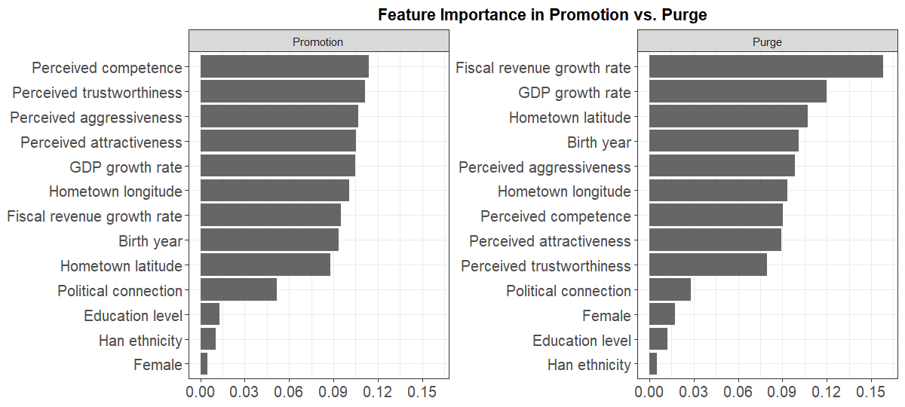

replicateEverything is a prototype system to:
- structure replication code as a connected pipeline
- fetch and run that code from a DOI (or registry handle)
- check that it still works — one study, or a whole journal at once
- link base replications to downstream re-analyses without copying files
You can use it from R or your browser.
TL;DR — just do this
# Figure 4 from Jiang and Yang (2026)
replicateEverything::run_replication(
doi = "10.1017/s0003055426101749",
what = "fig_4"
)
Why bother?
Computational replication has never been easier. But it is still a bit of a jungle. Archives are ad hoc in structure, paths differ, dependencies drift, and every new reader has to re-wrangle the collection of files they download from dataverse or osf. Plus there are no guarantees: Nobody runs a standing check that the archive still runs today.
replicateEverything contributes by proposing a format
that makes code quickly accessible and runnable.
Are we fighting the last battle? You might wonder (we certainly wonder): if an AI can rewrite the analysis from a paper on the fly, why keep an authoritative codebase? Our answer: Because the code is a record of analytic choices. When results disagree, you need a shared object to inspect, not a fresh vibe-coded reimplementation. That case gets stronger, we think, as models get better at improvising.
So this is an attempt to keep humans in the loop.
Here’s a walk through of the main elements plus the bells and whistles.
The registry (what is in there so far)
The registry indexes studies with lightweight stubs; code and data live in linked study repos. The index is still small — but you can browse what is there:
library(replicateEverything)
head(load_index()[, c("doi", "title", "year")])Example output:
#> doi title year
#> 1 10.1177/00491241211036161 Bounding Causes of Effects ... 2022
#> 2 10.1017/S0003055403000534 Ethnicity, Insurgency, and Civil War 2003
#> 3 10.1017/s0003055426101749 ... 2026 Each study in the registry has a designated maintainer; right now that is us, but we hope that others will start adding and commit to maintaining.
Run one result, from the top or from the middle
Pass a DOI and a step id (fig_1, tab_1,
…):
library(replicateEverything)
run_replication(
doi = "10.1017/S0003055403000534",
what = "tab_1"
)
# Stata when both engines exist:
run_replication(
doi = "10.1257/aer.91.5.1369",
what = "tab_2",
language = "stata"
)list_replications() shows what you can run from a given
study:
list_replications("10.1017/S0003055403000534")
# Replications: Ethnicity, Insurgency, and Civil War [10.1017/s0003055403000534]
# id type engine label
# tab_1 table r Table 1
# tab_1_stata table stata Table 1Run from top to bottom to get a list of all objects created including all intermediate datasets.
run_replication("10.1017/S0003055403000534", what = "everything")For what = "everything", upstream prep runs
automatically (given defaults to "nothing").
For a single table or figure, the default is "parents" —
use existing intermediate outputs when they are already on disk.
Pass format = TRUE for display-ready HTML or formatted
plots; the default returns raw analysis objects (models,
ggplots, and so on).
Wrinkles and features
Replication archives are DAGs
A minimally complex replication archive specifes a set of steps to
get from raw data to publication ready outputs. It has an implied
directed acyclical graphical (DAG) structure.
replicateEverything reads that graph from
replication.yml so you can start from prepared data or from
scratch.
describe_study_dag("10.1017/S0003055403000534")See Reanalysis and extension studies for downstream repos that inherit upstream steps without duplicating code.
Reanalysis without redundancy
You want to re-analyze a study with minimal alterations? Extension
studies set paper.extends and inherit: steps.
Inherited prep runs in the base repo; new analysis reads base
outputs/. Details:
vignette("reanalysis-studies").
Many languages, one entry point
Folder-backed studies may mix R, Stata, and Python. Pick the engine
with language = when both exist. See
vignette("stata-replications").
Collections
Registry rows carry collections tags (APSR,
PED, IPI, World Bank, …) for
filtering in the Shiny bibliography. To audit every study in a
collection:
audit_everything(patience = 20, collections = "APSR")Using AI to prep your archive
The fastest path from a messy delivery to a registry-ready study is
often an agent with the package skills — markdown
playbooks shipped in inst/ai/skills/:
ai_skills()
# folder-replication — generic folder-backed study repo
# dataverse-to-replicate-everything — Harvard Dataverse replication depositsPoint Cursor (or another agent) at the skill, give it your
replication folder, and ask it to produce replication.yml
with a steps: DAG, outputs/ paths, tests, and
a registry stub. The skills spell out layout, dependency probing,
substantive tests, and check_replication().
Practical tips without an agent:
- Start from the published code, not a rewrite — discover the true pipeline (what reads what) before you yaml it.
-
One script per step; declare inputs, outputs, and
parents in
steps:. -
Run
check_replication()andprepare_study_for_registry()before opening a registry PR. -
Add substantive tests under
tests/substantive/when you have published benchmarks (see Fearon & Laitintab_1).
Skill files live at
system.file("ai/skills", package = "replicateEverything")
after install.
Where to go next
| If you want to… | Read |
|---|---|
| Tour every main function | vignette("meet-the-functions") |
| Run examples from code | vignette("replication-example") |
| Build or migrate a folder-backed study | vignette("folder-replication-checklist") |
| Onboard a Harvard Dataverse deposit | skill dataverse-to-replicate-everything
|
| Add a reanalysis repo | vignette("reanalysis-studies") |
| Use Stata (or bilingual R/Stata) | vignette("stata-replications") |
| Browse and run in the browser | vignette("shiny-app") |
| Audit the whole registry | vignette("audit") |
| Install dependencies on a server | vignette("maintainer-setup") |
| Package-backed studies | vignette("package-replication-checklist") |
Live app: shiny2.wzb.eu/ipi/replicate/. Registry: github.com/replicate-anything/registry.